CODING AGENTS AS PIXEL WORLD MODELS
traex/GPT-6.1-Sol · 0120
点击播放 · 原生 RGB 像素
逐轮保存的候选
回放视频、检查图与代码变化。
每份候选均可单独播放。实际图片检查记录在下方工具轨迹中。
候选 01播放与检查图
点击播放 · 原生 RGB 像素
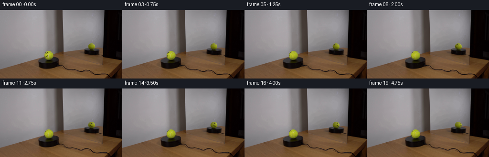
展开代码变化
--- 上一保存版本
+++ 本次保存版本
@@ -0,0 +1,115 @@
+from pathlib import Path
+import numpy as np
+from PIL import Image
+from scipy.ndimage import map_coordinates, gaussian_filter
+from scipy.optimize import least_squares
+import artifact_io
+
+ROOT=Path(__file__).resolve().parent
+SOURCE=np.asarray(Image.open(ROOT/'first_frame.png').convert('RGB'),dtype=np.float64)
+S=8
+
+def basis(nx,ny,nz):
+ return np.stack([np.ones_like(nx),nx,ny,nz,nx*ny,nx*nz,ny*nz,nx*nx,ny*ny],axis=-1)
+
+def rot(a):
+ c,s=np.cos(a),np.sin(a)
+ return np.array([[c,0,s],[0,1,0],[-s,0,c]])
+
+class Ball:
+ def __init__(self,cx,cy,rx,ry,yaw,mirrored,pitch):
+ self.cx,self.cy,self.rx,self.ry=cx,cy,rx,ry
+ p=np.radians(pitch)
+ # Projection has the same elevation at the real and virtual camera.
+ self.Q=rot(np.radians(yaw))@np.array([[(-1 if mirrored else 1),0,0],[0,np.cos(p),np.sin(p)],[0,-np.sin(p),np.cos(p)]])
+ yy,xx=np.mgrid[0:144,0:256]
+ nx=(xx-cx)/rx; ny=(cy-yy)/ry
+ r2=nx*nx+ny*ny
+ nz=np.sqrt(np.maximum(0,1-r2))
+ bb=basis(nx,ny,nz)
+ sel=r2<.87**2
+ if not mirrored:
+ # Exclude ink and pale ball seams from the illumination fit.
+ face=(((xx-94.6)/1.7)**2+((yy-90.0)/2.2)**2<1)|(((xx-98.5)/1.8)**2+((yy-89.5)/2.3)**2<1)
+ face|=(xx<101)&(yy>94)&(yy<100.7)
+ seam=(xx>101)&(xx<105)&(yy>91)&(yy<102)
+ seam|=(xx>104)&(xx<109)&(yy>89)&(yy<92.5)
+ sel &= ~(face|seam)
+ b=bb[sel]
+ self.coeff=[]
+ for ch in range(3):
+ col=SOURCE[:,:,ch][sel]
+ c=np.linalg.lstsq(b,col,rcond=None)[0]
+ reg=np.array([0,.08,.08,.08,.3,.3,.3,.3,.3])
+ result=least_squares(lambda cc:np.r_[b@cc-col,reg*cc],c,loss='soft_l1',f_scale=3.2)
+ self.coeff.append(result.x)
+ self.coeff=np.array(self.coeff).T
+ self.box=(int(cx-rx-3),int(cy-ry-3),int(cx+rx+4),int(cy+ry+4))
+ x0,y0,x1,y1=self.box
+ Y,X=np.mgrid[y0:y1:1/S,x0:x1:1/S]
+ X+=.5/S-.5;Y+=.5/S-.5
+ self.nx=(X-cx)/rx;self.ny=(cy-Y)/ry
+ self.r2=self.nx**2+self.ny**2
+ self.nz=np.sqrt(np.maximum(0,1-self.r2))
+ self.normal=np.stack([self.nx,self.ny,self.nz],-1)@self.Q.T
+ self.clean=self.light(self.nx,self.ny,self.nz)
+ self.alpha=np.clip((1-np.sqrt(self.r2))*min(rx,ry)*S+.5,0,1)
+ def light(self,x,y,z):
+ return np.clip(basis(x,y,z)@self.coeff,12,240)
+ def texture_sample(self,n):
+ # Actual initial visible felt texture, with stationary illumination removed.
+ local=n@self.Q
+ x,y,z=local[...,0],local[...,1],local[...,2]
+ X=self.cx+x*self.rx; Y=self.cy-y*self.ry
+ pixel=np.stack([map_coordinates(SOURCE[:,:,c],[Y,X],order=3,mode='nearest',prefilter=True) for c in range(3)],-1)
+ light=self.light(x,y,np.sqrt(np.maximum(0,1-x*x-y*y)))
+ texture=np.clip(pixel/light,.18,1.45)
+ weight=np.clip((z-.09)/.38,0,1)**3
+ weight*=np.clip((.993-np.sqrt(x*x+y*y))/.12,0,1)
+ return texture,weight
+
+front=Ball(102.0,95.40,9.65,9.25,0,False,13)
+mirror=Ball(191.72,76.83,7.04,6.79,-155,True,13)
+
+# Surface look on the very narrow strip not seen by either camera at t=0.
+def hidden_texture(n):
+ x,y,z=n[...,0],n[...,1],n[...,2]
+ grain=.008*np.sin(62*x+31*y)*np.sin(78*z-24*y)+.004*np.sin(149*x+136*y+81*z)
+ # One continuous pale rounded tennis seam, following the shell.
+ seam=np.exp(-((x-(.025+.65*(y-.12)**2))/.053)**2)
+ return np.stack([1+grain+.075*seam,1+grain+.035*seam,1+grain+.33*seam],-1)
+
+def texture(n):
+ t1,w1=front.texture_sample(n)
+ t2,w2=mirror.texture_sample(n)
+ # Select the most front-facing sample, without a discontinuity at joins.
+ w1=w1**3;w2=w2**3
+ w0=np.maximum(0,.022-w1-w2)
+ return (t1*w1[...,None]+t2*w2[...,None]+hidden_texture(n)*w0[...,None])/np.maximum(w1+w2+w0,1e-8)[...,None]
+
+def render(ball,angle):
+ n=ball.normal@rot(angle)
+ im=ball.clean*texture(n)
+ x0,y0,x1,y1=ball.box
+ # Integrate over sensor pixels for antialiased moving spherical ink.
+ return (im*ball.alpha[...,None]).reshape(y1-y0,S,x1-x0,S,3).mean((1,3))
+
+def generate():
+ frames=[]
+ zeros=[render(front,0),render(mirror,0)]
+ for i in range(20):
+ out=SOURCE.copy()
+ # Clockwise viewed from above. No translation, camera motion, or light motion.
+ angle=-np.radians(38)*i/4
+ for ball,zero in zip((front,mirror),zeros):
+ x0,y0,x1,y1=ball.box
+ out[y0:y1,x0:x1]+=render(ball,angle)-zero
+ frames.append(np.uint8(np.clip(np.rint(out),0,255)))
+ frames[0]=SOURCE.astype(np.uint8)
+ return np.stack(frames)
+
+if __name__=='__main__':
+ frames=generate()
+ artifact_io.save(frames,ROOT)
+ # Enlarged local preview for visual checking only.
+ Image.open(ROOT/'inspection.png').resize((2048,660)).save(ROOT/'.tmp'/'inspection_large.png')
候选 02播放与检查图
点击播放 · 原生 RGB 像素

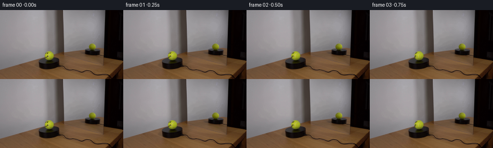
展开代码变化
--- 上一保存版本
+++ 本次保存版本
@@ -64,8 +64,8 @@
pixel=np.stack([map_coordinates(SOURCE[:,:,c],[Y,X],order=3,mode='nearest',prefilter=True) for c in range(3)],-1)
light=self.light(x,y,np.sqrt(np.maximum(0,1-x*x-y*y)))
texture=np.clip(pixel/light,.18,1.45)
- weight=np.clip((z-.09)/.38,0,1)**3
- weight*=np.clip((.993-np.sqrt(x*x+y*y))/.12,0,1)
+ weight=np.maximum(z,0)**2
+ weight*=np.clip(z/.025,0,1)
return texture,weight
front=Ball(102.0,95.40,9.65,9.25,0,False,13)
@@ -83,8 +83,8 @@
t1,w1=front.texture_sample(n)
t2,w2=mirror.texture_sample(n)
# Select the most front-facing sample, without a discontinuity at joins.
- w1=w1**3;w2=w2**3
- w0=np.maximum(0,.022-w1-w2)
+ w1=w1**2;w2=w2**2
+ w0=np.maximum(0,.000002-w1-w2)
return (t1*w1[...,None]+t2*w2[...,None]+hidden_texture(n)*w0[...,None])/np.maximum(w1+w2+w0,1e-8)[...,None]
def render(ball,angle):
候选 03播放与检查图
点击播放 · 原生 RGB 像素

展开代码变化
代码未变化；重新保存了产物。
候选 04播放与检查图
点击播放 · 原生 RGB 像素
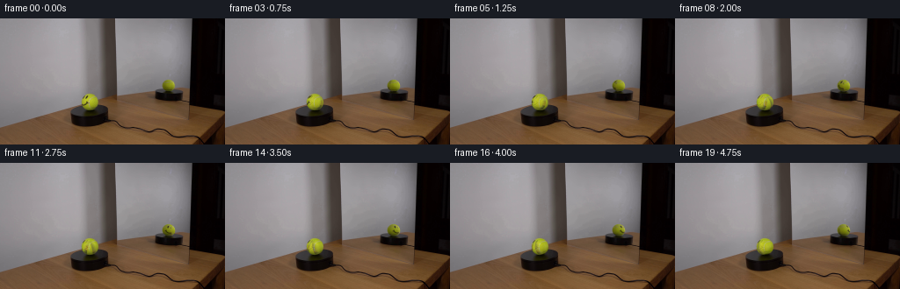
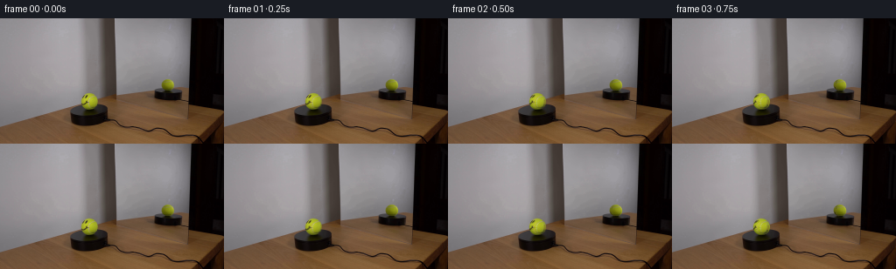
展开代码变化
--- 上一保存版本
+++ 本次保存版本
@@ -103,7 +103,16 @@
angle=-np.radians(38)*i/4
for ball,zero in zip((front,mirror),zeros):
x0,y0,x1,y1=ball.box
- out[y0:y1,x0:x1]+=render(ball,angle)-zero
+ region=out[y0:y1,x0:x1]
+ residual=SOURCE[y0:y1,x0:x1]-zero
+ coverage=ball.alpha.reshape(y1-y0,S,x1-x0,S).mean((1,3))
+ interior=np.clip((coverage-.25)/.75,0,1)
+ # The initial photograph contains antialiased marks. Remove their
+ # sampling residual instead of leaving stationary ghost ink.
+ low=gaussian_filter(residual,(2.0,2.0,0))
+ correction=(residual-low)*interior[...,None]
+ fade=min(1,i/2)
+ region+=render(ball,angle)-zero-correction*fade
frames.append(np.uint8(np.clip(np.rint(out),0,255)))
frames[0]=SOURCE.astype(np.uint8)
return np.stack(frames)
候选 05播放与检查图
候选 06播放与检查图
点击播放 · 原生 RGB 像素
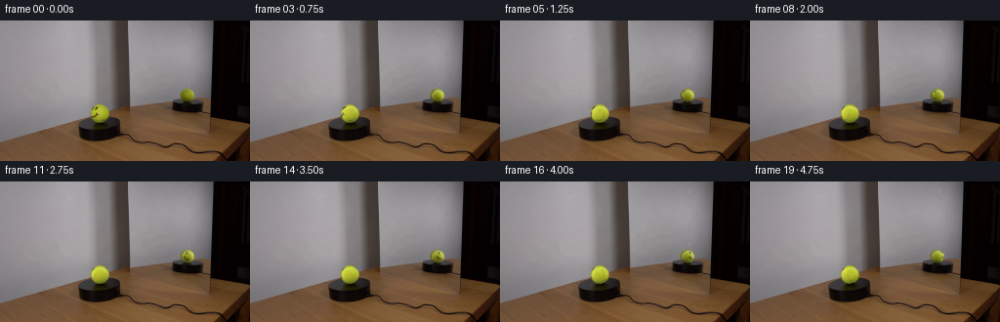
展开代码变化
--- 上一保存版本
+++ 本次保存版本
@@ -64,8 +64,11 @@
pixel=np.stack([map_coordinates(SOURCE[:,:,c],[Y,X],order=3,mode='nearest',prefilter=True) for c in range(3)],-1)
light=self.light(x,y,np.sqrt(np.maximum(0,1-x*x-y*y)))
texture=np.clip(pixel/light,.18,1.45)
- weight=np.maximum(z,0)**2
- weight*=np.clip(z/.025,0,1)
+ # The photographed outer rim contains a little wall/table blur.
+ # It is not a colored stripe on the ball's surface.
+ bg=((pixel[...,0]-pixel[...,1]>8)&(z<.65))|((pixel[...,2]>.43*pixel[...,1])&(z<.5))
+ texture=np.where(bg[...,None],1,texture)
+ weight=np.clip((z-.24)/.4,0,1)**2
return texture,weight
front=Ball(102.0,95.40,9.65,9.25,0,False,13)
@@ -84,7 +87,7 @@
t2,w2=mirror.texture_sample(n)
# Select the most front-facing sample, without a discontinuity at joins.
w1=w1**2;w2=w2**2
- w0=np.maximum(0,.000002-w1-w2)
+ w0=np.maximum(0,.0003-w1-w2)
return (t1*w1[...,None]+t2*w2[...,None]+hidden_texture(n)*w0[...,None])/np.maximum(w1+w2+w0,1e-8)[...,None]
def render(ball,angle):
@@ -106,10 +109,11 @@
region=out[y0:y1,x0:x1]
residual=SOURCE[y0:y1,x0:x1]-zero
coverage=ball.alpha.reshape(y1-y0,S,x1-x0,S).mean((1,3))
- interior=np.clip((coverage-.25)/.75,0,1)
+ rr=np.sqrt(((np.arange(x0,x1)[None,:]-ball.cx)/ball.rx)**2+((np.arange(y0,y1)[:,None]-ball.cy)/ball.ry)**2)
+ interior=np.clip((.99-rr)/.2,0,1)
# The initial photograph contains antialiased marks. Remove their
# sampling residual instead of leaving stationary ghost ink.
- low=gaussian_filter(residual,(2.0,2.0,0))
+ low=gaussian_filter(residual,(3.0,3.0,0))
correction=(residual-low)*interior[...,None]
fade=min(1,i/2)
region+=render(ball,angle)-zero-correction*fade
候选 07播放与检查图
点击播放 · 原生 RGB 像素
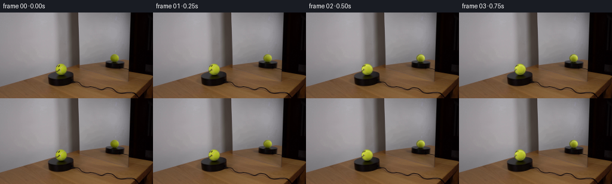
展开代码变化
--- 上一保存版本
+++ 本次保存版本
@@ -115,6 +115,11 @@
# sampling residual instead of leaving stationary ghost ink.
low=gaussian_filter(residual,(3.0,3.0,0))
correction=(residual-low)*interior[...,None]
+ if ball is front:
+ yy,xx=np.mgrid[y0:y1,x0:x1]
+ ink_region=((xx<100)&(yy<93))|((xx<101)&(yy>94)&(yy<100))
+ ink=ink_region&(rr<1.06)&(residual[...,1]<-10)
+ correction=np.where(ink[...,None],residual,correction)
fade=min(1,i/2)
region+=render(ball,angle)-zero-correction*fade
frames.append(np.uint8(np.clip(np.rint(out),0,255)))
可观测工具轨迹
实际执行的命令与返回图片。
命令 1exit 0
/bin/bash -lc 'ls -la && cat prompt.txt && cat GENERATION_RULES.md'
命令 2exit 0
/bin/bash -lc "cat artifact_io.py && python - <<'PY'
from PIL import Image
im=Image.open('first_frame.png'); im.resize((1024,576)).save('.tmp/enlarged.png')
PY"命令 3exit 0
/bin/bash -lc "python - <<'PY'
from PIL import Image
im=Image.open('first_frame.png')
im.crop((88,83,114,108)).resize((520,500)).save('.tmp/ball.png')
im.crop((182,67,201,87)).resize((380,400)).save('.tmp/reflection.png')
PY"命令 4exit 0
/bin/bash -lc "python - <<'PY'
from PIL import Image
im=Image.open('first_frame.png')
im.crop((88,83,116,110)).resize((560,540),Image.Resampling.NEAREST).save('.tmp/ball_nearest.png')
PY"命令 5exit 0
/bin/bash -lc "python - <<'PY'
import numpy as np
from PIL import Image
im=np.array(Image.open('first_frame.png'))
for y in range(86,105):
print(y, ' '.join('%3d'%im[y,x,1] for x in range(93,112)))
PY"命令 6exit 0
/bin/bash -lc "cat > generate.py <<'PY'
from pathlib import Path
import numpy as np
from PIL import Image
from scipy.ndimage import map_coordinates, gaussian_filter
from scipy.optimize import least_squares
import artifact_io
ROOT=Path(__file__).resolve().parent
SOURCE=np.asarray(Image.open(ROOT/'first_frame.png').convert('RGB'),dtype=np.float64)
S=8
def basis(nx,ny,nz):
return np.stack([np.ones_like(nx),nx,ny,nz,nx*ny,nx*nz,ny*nz,nx*nx,ny*ny],axis=-1)
def rot(a):
c,s=np.cos(a),np.sin(a)
return np.array([[c,0,s],[0,1,0],[-s,0,c]])
class Ball:
def __init__(self,cx,cy,rx,ry,yaw,mirrored,pitch):
self.cx,self.cy,self.rx,self.ry=cx,cy,rx,ry
p=np.radians(pitch)
# Projection has the same elevation at the real and virtual camera.
self.Q=rot(np.radians(yaw))@np.array([[(-1 if mirrored else 1),0,0],[0,np.cos(p),np.sin(p)],[0,-np.sin(p),np.cos(p)]])
yy,xx=np.mgrid[0:144,0:256]
nx=(xx-cx)/rx; ny=(cy-yy)/ry
r2=nx*nx+ny*ny
nz=np.sqrt(np.maximum(0,1-r2))
bb=basis(nx,ny,nz)
sel=r2<.87**2
if not mirrored:
# Exclude ink and pale ball seams from the illumination fit.
face=(((xx-94.6)/1.7)**2+((yy-90.0)/2.2)**2<1)|(((xx-98.5)/1.8)**2+((yy-89.5)/2.3)**2<1)
face|=(xx<101)&(yy>94)&(yy<100.7)
seam=(xx>101)&(xx<105)&(yy>91)&(yy<102)
seam|=(xx>104)&(xx<109)&(yy>89)&(yy<92.5)
sel &= ~(face|seam)
b=bb[sel]
self.coeff=[]
for ch in range(3):
col=SOURCE[:,:,ch][sel]
c=np.linalg.lstsq(b,col,rcond=None)[0]
reg=np.array([0,.08,.08,.08,.3,.3,.3,.3,.3])
result=least_squares(lambda cc:np.r_[b@cc-col,reg*cc],c,loss='soft_l1',f_scale=3.2)
self.coeff.append(result.x)
self.coeff=np.array(self.coeff).T
self.box=(int(cx-rx-3),int(cy-ry-3),int(cx+rx+4),int(cy+ry+4))
x0,y0,x1,y1=self.box
Y,X=np.mgrid[y0:y1:1/S,x0:x1:1/S]
X+=.5/S-.5;Y+=.5/S-.5
self.nx=(X-cx)/rx;self.ny=(cy-Y)/ry
self.r2=self.nx**2+self.ny**2
self.nz=np.sqrt(np.maximum(0,1-self.r2))
self.normal=np.stack([self.nx,self.ny,self.nz],-1)@self.Q.T
self.clean=self.light(self.nx,self.ny,self.nz)
self.alpha=np.clip((1-np.sqrt(self.r2))*min(rx,ry)*S+.5,0,1)
def light(self,x,y,z):
return np.clip(basis(x,y,z)@self.coeff,12,240)
def texture_sample(self,n):
# Actual initial visible felt texture, with stationary illumination removed.
local=n@self.Q
x,y,z=local[...,0],local[...,1],local[...,2]
X=self.cx+x*self.rx; Y=self.cy-y*self.ry
pixel=np.stack([map_coordinates(SOURCE[:,:,c],[Y,X],order=3,mode='nearest',prefilter=True) for c in range(3)],-1)
light=self.light(x,y,np.sqrt(np.maximum(0,1-x*x-y*y)))
texture=np.clip(pixel/light,.18,1.45)
weight=np.clip((z-.09)/.38,0,1)**3
weight*=np.clip((.993-np.sqrt(x*x+y*y))/.12,0,1)
return texture,weight
front=Ball(102.0,95.40,9.65,9.25,0,False,13)
mirror=Ball(191.72,76.83,7.04,6.79,-155,True,13)
# Surface look on the very narrow strip not seen by either camera at t=0.
def hidden_texture(n):
x,y,z=n[...,0],n[...,1],n[...,2]
grain=.008*np.sin(62*x+31*y)*np.sin(78*z-24*y)+.004*np.sin(149*x+136*y+81*z)
# One continuous pale rounded tennis seam, following the shell.
seam=np.exp(-((x-(.025+.65*(y-.12)**2))/.053)**2)
return np.stack([1+grain+.075*seam,1+grain+.035*seam,1+grain+.33*seam],-1)
def texture(n):
t1,w1=front.texture_sample(n)
t2,w2=mirror.texture_sample(n)
# Select the most front-facing sample, without a discontinuity at joins.
w1=w1**3;w2=w2**3
w0=np.maximum(0,.022-w1-w2)
return (t1*w1[...,None]+t2*w2[...,None]+hidden_texture(n)*w0[...,None])/np.maximum(w1+w2+w0,1e-8)[...,None]
def render(ball,angle):
n=ball.normal@rot(angle)
im=ball.clean*texture(n)
x0,y0,x1,y1=ball.box
# Integrate over sensor pixels for antialiased moving spherical ink.
return (im*ball.alpha[...,None]).reshape(y1-y0,S,x1-x0,S,3).mean((1,3))
def generate():
frames=[]
zeros=[render(front,0),render(mirror,0)]
for i in range(20):
out=SOURCE.copy()
# Clockwise viewed from above. No translation, camera motion, or light motion.
angle=-np.radians(38)*i/4
for ball,zero in zip((front,mirror),zeros):
x0,y0,x1,y1=ball.box
out[y0:y1,x0:x1]+=render(ball,angle)-zero
frames.append(np.uint8(np.clip(np.rint(out),0,255)))
frames[0]=SOURCE.astype(np.uint8)
return np.stack(frames)
if __name__=='__main__':
frames=generate()
artifact_io.save(frames,ROOT)
# Enlarged local preview for visual checking only.
Image.open(ROOT/'inspection.png').resize((2048,660)).save(ROOT/'.tmp'/'inspection_large.png')
PY
OPENBLAS_NUM_THREADS=1 python generate.py"命令 7exit 0
/bin/bash -lc "python - <<'PY'
from PIL import Image,ImageDraw
im=Image.new('RGB',(8*156,2*156),(80,80,80))
for j,i in enumerate([0,1,3,5,8,11,14,19]):
f=Image.open(f'frames/{i:02}.png')
im.paste(f.crop((89,83,115,109)).resize((156,156)),(j*156,0))
im.paste(f.crop((182,67,202,87)).resize((156,156)),(j*156,156))
im.save('.tmp/crops.png')
PY"命令 8exit 0
/bin/bash -lc "python - <<'PY'
p='generate.py'
s=open(p).read().replace('weight=np.clip((z-.09)/.38,0,1)**3\\n weight*=np.clip((.993-np.sqrt(x*x+y*y))/.12,0,1)','weight=np.maximum(z,0)**2\\n weight*=np.clip(z/.025,0,1)')
s=s.replace('w1=w1**3;w2=w2**3\\n w0=np.maximum(0,.022-w1-w2)','w1=w1**2;w2=w2**2\\n w0=np.maximum(0,.000002-w1-w2)')
open(p,'w').write(s)
PY
OPENBLAS_NUM_THREADS=1 python generate.py
python - <<'PY'
from PIL import Image
im=Image.new('RGB',(8*156,2*156),(80,80,80))
for j,i in enumerate([0,1,3,5,8,11,14,19]):
f=Image.open(f'frames/{i:02}.png')
im.paste(f.crop((89,83,115,109)).resize((156,156)),(j*156,0))
im.paste(f.crop((182,67,202,87)).resize((156,156)),(j*156,156))
im.save('.tmp/crops.png')
PY"命令 9exit 0
/bin/bash -lc "python - <<'PY'
p='generate.py'
s=open(p).read().replace(\"out[y0:y1,x0:x1]+=render(ball,angle)-zero\", \"\"\"region=out[y0:y1,x0:x1]
residual=SOURCE[y0:y1,x0:x1]-zero
coverage=ball.alpha.reshape(y1-y0,S,x1-x0,S).mean((1,3))
interior=np.clip((coverage-.25)/.75,0,1)
# The initial photograph contains antialiased marks. Remove their
# sampling residual instead of leaving stationary ghost ink.
low=gaussian_filter(residual,(2.0,2.0,0))
correction=(residual-low)*interior[...,None]
fade=min(1,i/2)
region+=render(ball,angle)-zero-correction*fade\"\"\")
open(p,'w').write(s)
PY
OPENBLAS_NUM_THREADS=1 python generate.py
python - <<'PY'
from PIL import Image
im=Image.new('RGB',(8*156,2*156),(80,80,80))
for j,i in enumerate([0,1,3,5,8,11,14,19]):
f=Image.open(f'frames/{i:02}.png')
im.paste(f.crop((89,83,115,109)).resize((156,156)),(j*156,0))
im.paste(f.crop((182,67,202,87)).resize((156,156)),(j*156,156))
im.save('.tmp/crops.png')
PY"命令 10exit 0
/bin/bash -lc "python - <<'PY'
from PIL import Image
import numpy as np
im=np.array(Image.open('first_frame.png'))
for xy in [(98,90),(98,95),(99,96),(96,98),(105,97),(104,95),(110,96),(102,102),(107,101),(111,98),(93,98),(104,92)]:
x,y=xy;print(xy,im[y,x])
PY"命令 11exit 0
/bin/bash -lc "python - <<'PY'
p='generate.py'
s=open(p).read().replace('texture=np.clip(pixel/light,.18,1.45)', '''texture=np.clip(pixel/light,.18,1.45)
# The photographed outer rim contains a little wall/table blur.
# It is not a colored stripe on the ball's surface.
bg=((pixel[...,0]-pixel[...,1]>8)&(z<.65))|((pixel[...,2]>.43*pixel[...,1])&(z<.5))
texture=np.where(bg[...,None],1,texture)''')
s=s.replace('weight=np.maximum(z,0)**2\\n weight*=np.clip(z/.025,0,1)', 'weight=np.clip((z-.24)/.4,0,1)**2')
s=s.replace('w0=np.maximum(0,.000002-w1-w2)','w0=np.maximum(0,.0003-w1-w2)')
s=s.replace('interior=np.clip((coverage-.25)/.75,0,1)', '''rr=np.sqrt(((np.arange(x0,x1)[None,:]-ball.cx)/ball.rx)**2+((np.arange(y0,y1)[:,None]-ball.cy)/ball.ry)**2)
interior=np.clip((.99-rr)/.2,0,1)''')
s=s.replace('low=gaussian_filter(residual,(2.0,2.0,0))', 'low=gaussian_filter(residual,(3.0,3.0,0))')
open(p,'w').write(s)
PY
OPENBLAS_NUM_THREADS=1 python generate.py
python - <<'PY'
from PIL import Image
im=Image.new('RGB',(8*156,2*156),(80,80,80))
for j,i in enumerate([0,1,3,5,8,11,14,19]):
f=Image.open(f'frames/{i:02}.png')
im.paste(f.crop((89,83,115,109)).resize((156,156)),(j*156,0))
im.paste(f.crop((182,67,202,87)).resize((156,156)),(j*156,156))
im.save('.tmp/crops.png')
PY"命令 12exit 0
/bin/bash -lc "python - <<'PY'
p='generate.py';s=open(p).read();s=s.replace('correction=(residual-low)*interior[...,None]', '''correction=(residual-low)*interior[...,None]
if ball is front:
yy,xx=np.mgrid[y0:y1,x0:x1]
ink_region=((xx<100)&(yy<93))|((xx<101)&(yy>94)&(yy<100))
ink=ink_region&(rr<1.06)&(residual[...,1]<-10)
correction=np.where(ink[...,None],residual,correction)''');open(p,'w').write(s)
PY
OPENBLAS_NUM_THREADS=1 python generate.py
python - <<'PY'
import numpy as np
from PIL import Image
im=np.asarray(Image.open('first_frame.png'))
a=np.load('pixels.npz')['pixels']
assert a.shape==(144,256,20)
frame0=np.stack([a[:,:,0]>>16,(a[:,:,0]>>8)&255,a[:,:,0]&255],-1).astype('uint8')
assert np.array_equal(frame0,im)
print('Verified 20 frames, 256x144 RGB; first frame is pixel-identical.')
PY"视觉工具实际返回图片 1
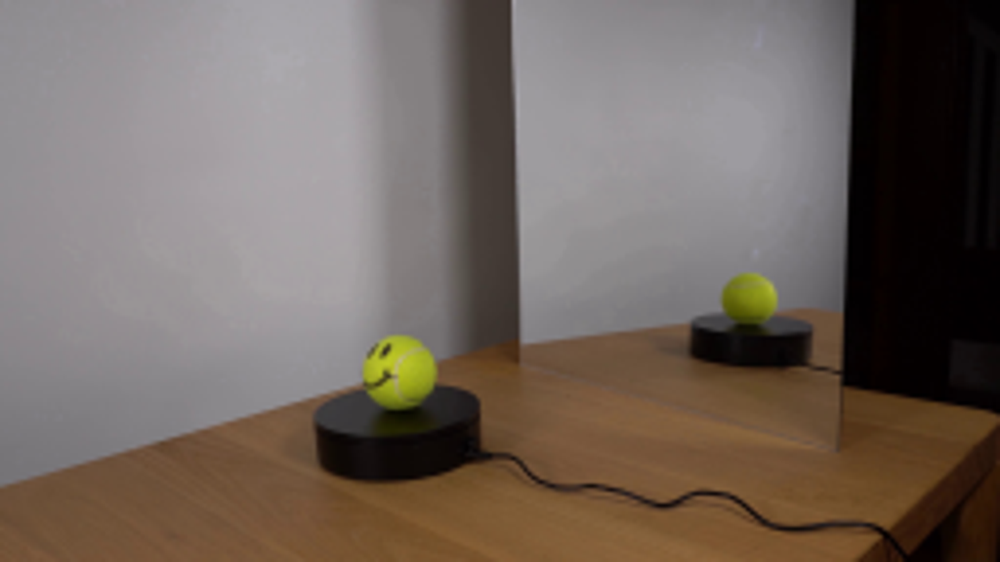
视觉工具实际返回图片 2
视觉工具实际返回图片 3
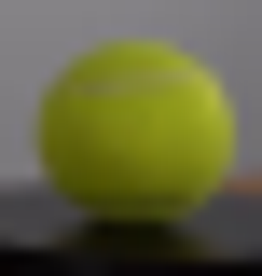
视觉工具实际返回图片 4
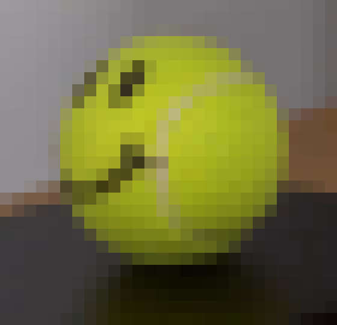
视觉工具实际返回图片 5
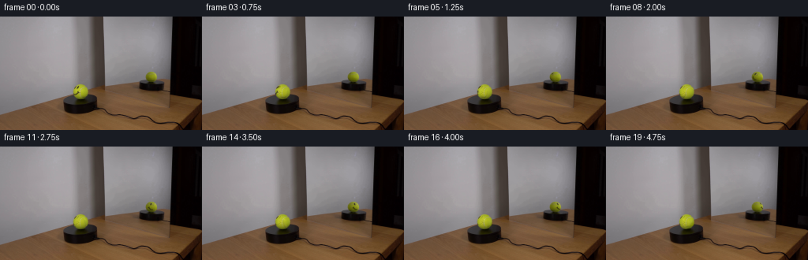
视觉工具实际返回图片 6
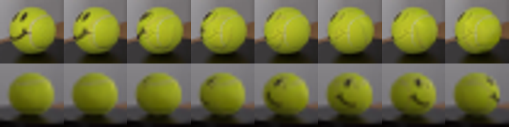
视觉工具实际返回图片 7
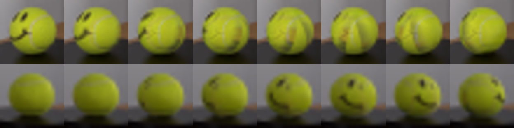
视觉工具实际返回图片 8
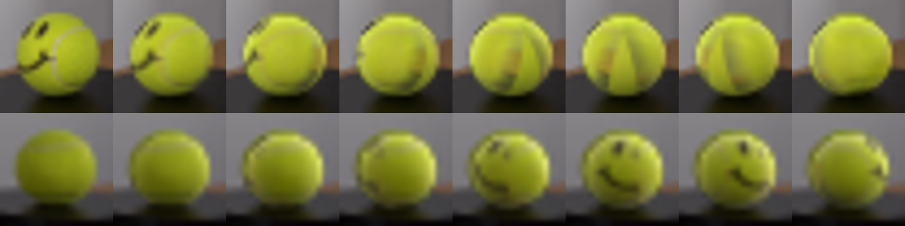
视觉工具实际返回图片 9
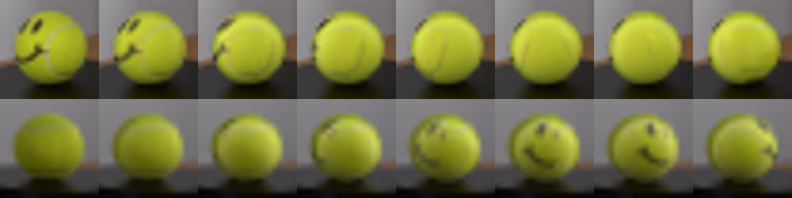
保存候选 7 份；完成命令 12 次；可验证图片返回 9 张。原始 API 响应与完整日志保留在本地。